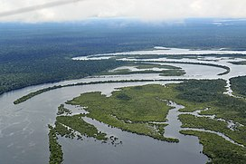
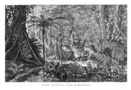
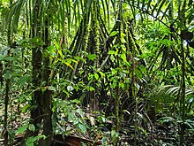
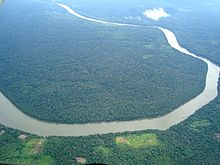

The Amazon rainforest, Amazon jungle[a] or Amazonia is a moist broadleaf tropical rainforest in the Amazon biome that covers most of the Amazon basin of South America. This basin encompasses 7,000,000 km2 (2,700,000 sq mi), of which 5,500,000 km2 (2,100,000 sq mi) are covered by the rainforest. This region includes territory belonging to nine nations and 3,344 formally acknowledged indigenous territories.
The majority of the forest is contained within Brazil, with 60% of the rainforest, followed by Peru with 13%, Colombia with 10%, and with minor amounts in Bolivia, Ecuador, French Guiana, Guyana, Suriname, and Venezuela. Four nations have "Amazonas" as the name of one of their first-level administrative regions, and France uses the name "Guiana Amazonian Park" for its rainforest protected area. The Amazon represents over half of the planet's remaining rainforests,[2] and comprises the largest and most biodiverse tract of tropical rainforest in the world, with an estimated 390 billion individual trees divided into 16,000 species.
More than 30 million people of 350 different ethnic groups live in the Amazon, which are subdivided into 9 different national political systems and 3,344 formally acknowledged indigenous territories. Indigenous peoples make up 9% of the total population with 60 of the groups remaining largely isolated.
In the Amazonas, there has been fighting and wars between the neighboring tribes of the Jivaro. Several tribes of the Jivaroan group, including the Shuar, practised headhunting for trophies and headshrinking.[6] The accounts of missionaries to the area in the borderlands between Brazil and Venezuela have recounted constant infighting in the Yanomami tribes. More than a third of the Yanomamo males, on average, died from warfare.[7] During the Amazon rubber boom it is estimated that diseases brought by immigrants, such as typhus and malaria, killed 40,000 native Amazonians
Bates's 1863 The Naturalist on the River Amazons
The rainforest likely formed during the Eocene era (from 56 million years to 33.9 million years ago). It appeared following a global reduction of tropical temperatures when the Atlantic Ocean had widened sufficiently to provide a warm, moist climate to the Amazon basin. The rainforest has been in existence for at least 55 million years, and most of the region remained free of savanna-type biomes at least until the current ice age when the climate was drier and savanna more widespread
More than 30 million people of 350 different ethnic groups live in the Amazon, which are subdivided into 9 different national political systems and 3,344 formally acknowledged indigenous territories. Indigenous peoples make up 9% of the total population with 60 of the groups remaining largely isolated.
Amazon rainforest in Colombia
Aerial view of the Amazon rainforest
Go to this website for your booking : Book now